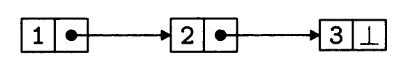
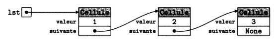

Les listes chaînées¶
Les listes Python¶
Vous connaissez déjà les listes Python, qui permettent de stocker simplement des séquences d'éléments, mais ces listes ne sont pas adaptées à toutes les opérations que l'on pourrait vouloir effectuer sur des séquences.
Les listes de Python permettent par exemple d'insérer ou de supprimer efficacement des éléments à la fin d'un tableau, avec les opérations append et pop, mais se prêtent mal à l'insertion ou la suppression d'un élément à une autre position l. En effet, les éléments d'un tableau étant contigus et ordonnés en mémoire, insérer un élément dans une séquence demande de déplacer tous les éléments qui le suivent pour lui laisser une place.
Par exemple, si l'on veut insérer un élément au début d'une liste, on pourrait utiliser la méthode insert du type List :
t = [2,5,1,9,8]bksl-nl# Insérer 5 au début :bksl-nlt.insert(0, 5)bksl-nlbksl-nlprint(f't = {t}')bksl-nl
En terme de coût algorithmique, cela revient à écrire ceci :
t = [2,5,1,9,8]bksl-nl# Insérer 5 au début :bksl-nlt.append(None)bksl-nlfor i in range(len (t) - 1, 0, -1):bksl-nl t[i] = t[i - 1]bksl-nlt[0] = 5bksl-nlbksl-nlprint(f't = {t}')bksl-nl
On voit donc que les listes Python ne sont pas toujours idéales, selon les opérations que l'on souhaite faire.
C'est la raison pour laquelle nous allons nous intéresser à un nouveau type de listes : les listes chaînées.
Présentation des listes chaînées¶
Une liste chaînée permet, tout comme les listes Python, de représenter une liste, c'est-à-dire une séquence finie de valeurs.
Sa structure a pour particularité le fait que les éléments sont chaînés entre eux, permettant le passage d'un élément à l'élément suivant. Ainsi, chaque élément est stocké dans un petit bloc alloué quelque part dans la mémoire, que l'on pourra appeler maillon ou cellule, à laquelle est associée :
- une valeur,
- la référence vers la cellule contenant l'élément suivant de la liste.

La liste chaînée ci-dessus contient donc les éléments 1, 2, 3.
Type abstrait Liste
Voici une manière de définir le type abstrait Liste représentant une liste chaînée.
Utilise : Element, Entier, Booleen
Opérations fondamentales (primitives):
| Opération | Description |
|---|---|
| \(nouvelleListeVide :~\rightarrow Liste~VIDE\) | Renvoie une nouvelle liste vide. |
| \(estListeVide :~Liste \rightarrow Booleen\) | Renvoie True si la liste donnée est vide, False sinon. |
| \(inserer :~Liste \times Element \times Entier \rightarrow Liste~NON~VIDE\) | Renvoie une nouvelle liste incluant les éléments de la liste donnée à laquelle on a ajouté l'élément donné d'indice donné. |
| \(listeTete :~Liste \rightarrow Element\) | Renvoie l'élément en tête (dans la première cellule) de la liste. |
| \(listeQueue :~Liste \rightarrow Liste\) | Renvoie la liste donnée privée de sa tête. |
Autres opérations:
| Opération | Description |
|---|---|
| \(nieme\_element :~Liste \times Entier \rightarrow Element\) | Renvoie l'élément situé à l'indice donné de la liste donnée. |
| \(supprimer :~Liste~NON~VIDE \times Entier \rightarrow Liste\) | Renvoie une nouvelle liste contenant les éléments de la liste donnée à laquelle on a supprimé l'élément donné d'indice donné. |
| \(longueur :~Liste \rightarrow Entier~Naturel\) | Renvoie la longueur (nombre d'éléments) de la liste donnée. |
On peut également avoir des opérations permettant d'interagir avec les cellules de la liste, à condition de faire, lors de l'implémentation, la distinction entre "liste" et "cellule" (en créant une classe Liste et une classe Cellule par exemple).
En effet, dans certaines implémentations, listes et cellules peuvent être confondues.
Interactions avec les Cellules:
| Opération | Description |
|---|---|
| \(acces :~Liste~NON~VIDE \times Entier \rightarrow Cellule\) | Renvoie la cellule située à l'indice donné de la liste donnée. |
| \(contenu :~Cellule \rightarrow Element\) | Renvoie l'élément contenu dans la cellule donnée. |
| \(successeur :~Cellule \rightarrow Cellule\) | Renvoie la cellule qui succède à la cellule donnée. |
Type abstrait \(\ne\) implémentation
Il est essentiel de faire la différence entre un type abstrait et une implémentation.
On qualifie d'abstrait ce type de donnée car on ne spécifie pas comment les données sont représentées ni comment les opérations sont implémentées.
Cette définition abstraite du type liste chaînée, bien qu'étant non mutable (on renvoie une nouvelle liste lors d'une insertion ou de la suppression d'un élément), peut donner lieu à tout un tas d'implémentations différentes : avec ou sans la POO, récursive ou non, muable ou immuable, etc. Il n'y a aucune obligation de suivre à la lettre la définition abstraite lors de l'implémentation, tant que les opérations définies sont bien implémentées.
On sera donc libre de faire une implémentation muable, avec modification en place de la liste si on le souhaite.
Implémentations des listes chaînées¶
Implémentation récursive avec POO¶
Pour notre première implémentation des listes chaînées, on propose d'utiliser la POO.
On crée une classe Cellule permettant de représenter une cellule (ou un maillon) d'une liste :
class Cellule:bksl-nl ''' Une cellule d'une liste chaînée. '''bksl-nlbksl-nl def py-undpy-undinitpy-undpy-und(self, v, s):bksl-nl self.valeur = v # Valeur contenue dans la cellulebksl-nl self.suivante = s # Cellule suivantebksl-nlbksl-nl def py-undpy-undlenpy-undpy-und(self):bksl-nl ''' Renvoie la longueur de la liste non vide. '''bksl-nl bksl-nl if self.suivante == None:bksl-nl return 1bksl-nl else:bksl-nl return 1 + len(self.suivante)bksl-nl bksl-nl def py-undpy-undstrpy-undpy-und(self):bksl-nl ''' Renvoie une représentation textuelle de la liste. '''bksl-nlbksl-nl res = f'[{self.valeur}'bksl-nl cell = self.suivantebksl-nl while cell:bksl-nl res += f', {cell.valeur}'bksl-nl cell = cell.suivantebksl-nl res += ']'bksl-nl return resbksl-nlbksl-nl# Fonctions définies en dehors de la classebksl-nlbksl-nldef longueur(lst):bksl-nl ''' Renvoie la longueur d'une liste.bksl-nl Si la liste est un objet None, cette longueur vaut 0.bksl-nl Sinon, la longueur est calculée avec la méthode py-undpy-undlenpy-undpy-und de la classe Cellule. '''bksl-nlbksl-nl passbksl-nlbksl-nldef afficher(lst):bksl-nl ''' Renvoie un affichage textuelle de la liste.bksl-nl Si la liste est l'objet None, l'affichage sera [].bksl-nl Sinon, l'affichage sera obtenu avec la méthode py-undpy-undstrpy-undpy-und de la classe Cellule. '''bksl-nlbksl-nl passbksl-nlbksl-nldef niemepy-undelement(n, lst):bksl-nl ''' Renvoie le n-ième élément de la liste lst NON VIDE.bksl-nl Les éléments sont indexés à partir de 0.bksl-nl :param lst: (Cellule) une liste chaînée non vide.bksl-nl :return: l'élément contenu à l'indice n de la liste. '''bksl-nlbksl-nl if lst is None:bksl-nl raise ValueError("La liste ne doit pas être vide !")bksl-nl else:bksl-nl # À COMPLÉTERbksl-nl passbksl-nlbksl-nldef concatener(l1, l2):bksl-nl ''' Renvoie une nouvelle liste, résultant de la concaténation des listes l1 et l2.bksl-nl :param l1: (Cellule | None) une liste chaînéebksl-nl :param l2: (Cellule | None) une autre liste chaînéebksl-nl :return: (Cellule | None) une nouvelle liste chaînée '''bksl-nlbksl-nl passbksl-nlbksl-nldef renverser(lst):bksl-nl ''' Renvoie une nouvelle liste contenant les éléments de lst mais dans l'ordre inverse.bksl-nl :param lst: (Cellule | None) une liste chaînéebksl-nl :return: (Cellule | None) une nouvelle liste chaînée '''bksl-nlbksl-nl# Créer une nouvelle liste contenant 1, 2, 3bksl-nllst = Cellule(1, Cellule(2, Cellule(3, None)))bksl-nllstpy-undvide = Nonebksl-nlafficher(lst)bksl-nlafficher(lstpy-undvide)bksl-nl
liste.py

Implémentation
Avec cette implémentation, une liste chaînée est soit :
- une liste vide représentée par la valeur
None - une liste représentée par une instance de
Cellule.
À faire
Écrivez de manière récursive les fonctions longueur, afficher, nieme_element, concatener et renverser, en respectant bien la documentation.
Implémentation finale
lst mais dans l'ordre inverse.bksl-nl Implémentation récursive, plus simple à écrire mais moins efficace, car on doitbksl-nl faire autant de concaténations qu'il y a d'éléments dans lst.bksl-nl :param lst: (Cellule | None) une liste chaînéebksl-nl :return: (Cellule | None) une nouvelle liste chaînée '''bksl-nlbksl-nl if lst is None: # cas de base : si la liste lst est VIDEbksl-nl return None # une liste VIDE renservée reste une liste VIDEbksl-nl else:bksl-nl return concatener(renverserpy-undrec(lst.suivante), Cellule(lst.valeur, None)) # cas général (récursif)bksl-nlbksl-nldef renverserpy-undit(lst):bksl-nl ''' Renvoie une nouvelle liste contenant les éléments de lst mais dans l'ordre inverse.bksl-nl Version itérative, plus efficace que la version récursive précédente.bksl-nl :param lst: (Cellule | None) une liste chaînéebksl-nl :return: (Cellule | None) une nouvelle liste chaînée '''bksl-nlbksl-nl res = None # créer une nouvelle liste chaînée VIDEbksl-nl c = lst # stocker la première cellule de lstbksl-nl while c is not None: # tant que l'on a pas parcouru toute la listebksl-nl res = Cellule(c.valeur, res) # on crée une nouvelle liste à partir de la valeur de la cellule cbksl-nl # et de l'ancienne liste contenue dans resbksl-nl c = c.suivante # on récupère la cellule suivante pour la stocker dans cbksl-nl return res # renvoyer notre nouvelle liste chaînéebksl-nl bksl-nl# Créer une nouvelle liste contenant 1, 2, 3bksl-nllst = Cellule(1, Cellule(2, Cellule(3, None)))bksl-nllstpy-undvide = Nonebksl-nlafficher(lst)bksl-nlafficher(lstpy-undvide)bksl-nl
Remarques
- La fonction concatener ne modifie pas les deux listes chaînées
l1etl2passées en entrée, elle renvoie une nouvelle liste chaînée. Pour créer une liste chaînée non vide, on fait appel au constructeur de la classeCellule. - Il faut bien comprendre que dans notre implémentation, une liste chaînée, représentée par une instance de la classe
Cellule, est confondue avec la première cellule de cette liste (les deux sont identiques). C'est pourquoi, à la ligne81dans la fonctionrenverser_it, stocker la première cellule de la listelstrevient à stocker la listelstelle-même. - La fonction récursive
renverser_recn'est pas très efficace, puisqu'on fait autant de concaténations qu'il y a d'éléments dans la liste initiale. La version itérativerenverser_itest plus efficace car on effectue un parcours de la liste initiale, en ajoutant chaque élément à notre nouvelle liste (en recréant à chaque fois une nouvelle liste en instanciantCellule). Cet ajout est moins coûteux qu'une concaténation.